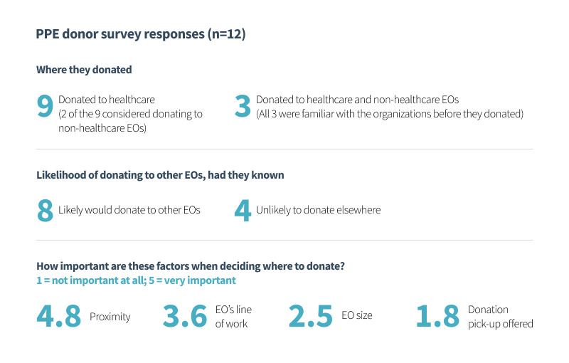
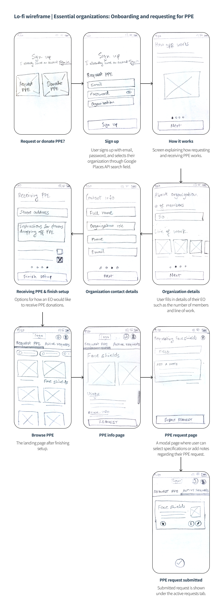
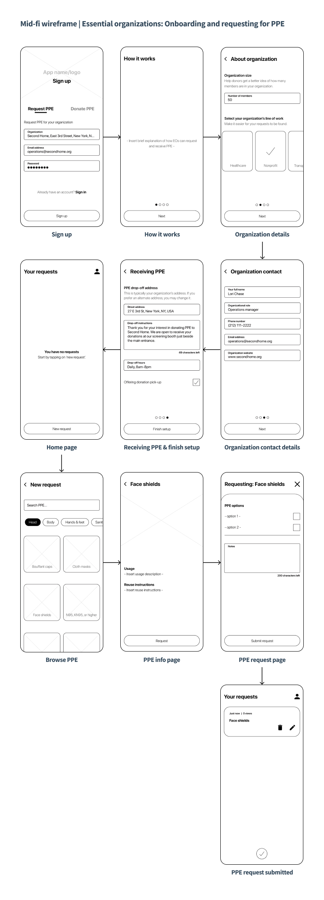
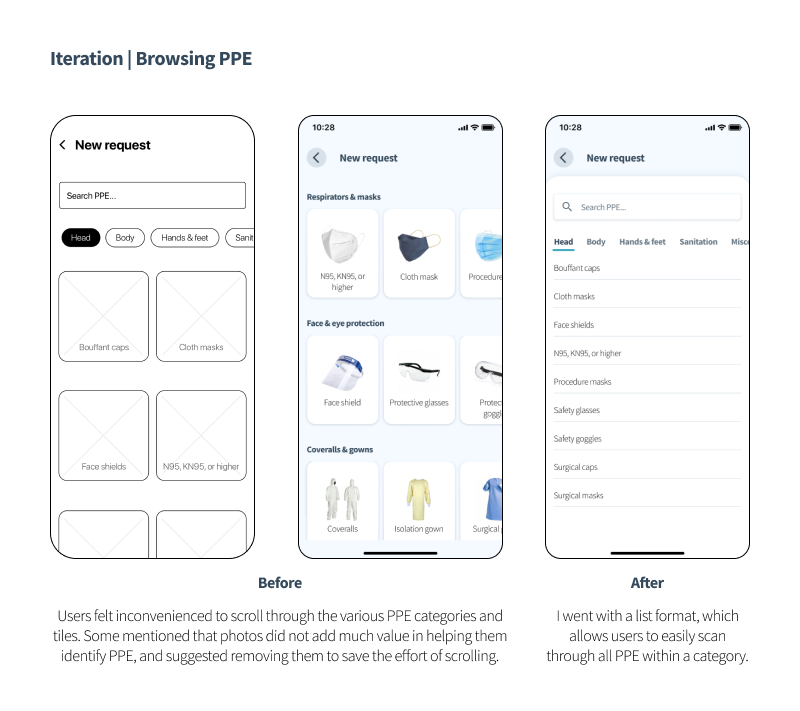
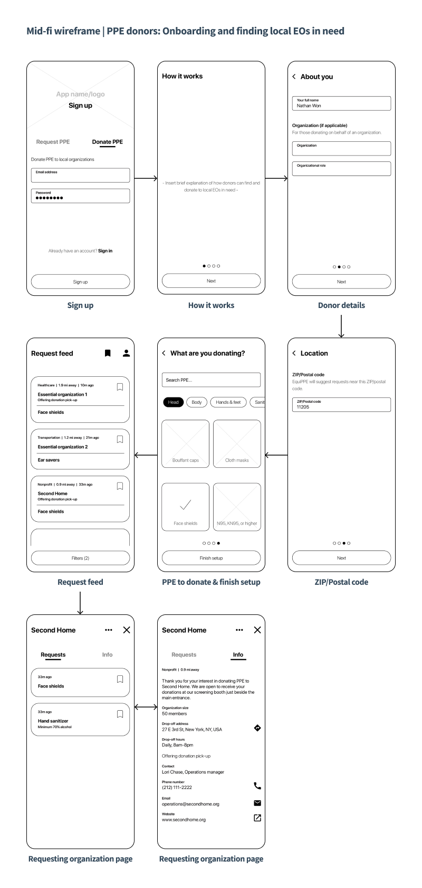

EquiPPE
Case study · Product design · Indepedent project
Jump to prototypeProject goals 🎯
For my first UX project, I wished to take on something that was relevant to the time, required me to generate a solution that is thorough and comprehensive, and challenged me to explore the full spectrum of the user-centered design process from research to creating a high-fidelity prototype.
Tools 🔧
Figma, Photoshop, Illustrator
Project duration 📅
May-Sept., 2020 (5 months)
Quick links 🐇
Discovery & research User personas Proposed solution Goal #1 Goal #2 Goal #3 Visual design Final prototype Gauging success Ideas left out/for future consideration ReflectionDiscovery & research
Context
I started this project in May, 2020 when the world was grappling with the early stages of the COVID-19 pandemic. During this time, severe personal protective equipment (PPE) shortages impacted essential organizations (EOs from here on) across North America. To help alleviate this burden, individuals and companies generously donated PPE to local EOs in need.
But...
The problem
Despite the outpour of support, there were instances of EOs such as homeless shelters, municipal sanitation, food processing plants, pharmacies, and emergency services, among others that struggled to secure the bare minimum to ensure a relatively safe work environment. Considering quantities are finite, I wondered if a more equitable distribution of PPE donations would be possible to help prevent such instances.
Why could this be happening?
I hypothesized and shortlisted four factors potentially contributing to the issue.
- Limited mainstream media coverage of PPE needs of non-healthcare EOs
- EOs do not have a go-to platform to voice their needs to PPE donors
- Donors are unsure or unaware of local EOs in need of PPE
- Donors are only donating to EOs they are familiar with or have heard of
To get a better understanding of the last two points, I surveyed 12 PPE donors (aged 22 to 54). Although a smaller sample size, my findings suggested that donors are willing to donate PPE to EOs other than the ones they donated to, had they known. Proximity and line of work carried the greatest importance when it comes to deciding where to donate.
User personas
I used news articles of people interviewed on behalf of EOs experiencing PPE shortages, as well as sentiments shared by PPE donors I surveyed, to generate two user personas – Lori and Nathan.
Proposed solution
Design an app that would help direct PPE donations to EOs in need by:
- Allowing EOs (including healthcare) like Second Home, to submit requests for PPE they desperately need
- Displaying requests to local PPE donors like Nathan, so they are aware and may consider donating
- Ensuring a donation process that is direct and convenient
Comparable services
Here are two (of many) existing services that share similar goals.
Get Us PPE
During the planning stages back in May, I came across getusppe.org, a website founded by medical professionals in
the US whose aim was to facilitate PPE donations to hospitals that need it most. Get Us PPE helped me understand the
details required to ensure a successful donation process, which I adapted to suit my app’s framework. They have
since expanded to allow PPE requests from select EOs like homeless shelters and social service organizations.
Although I found this chart long after I began this project, it illustrates the lopsided nature of PPE shortages.
DonateTO
An initiative set up by the City of Toronto in April, where PPE donors may fill out an online form to submit their
donation offer. Once an offer is approved, the City directs donors to appropriate EOs in need.
Concerns
Misuse of PPE donations
With reports of unethical stockpiling of PPE, I anticipated that a portion of app users may misuse it to their
advantage. To this end, EOs will be asked to identify when signing up, using Google Places API. Further verification
may be required if there is a discrepancy between an EO’s official address and the PPE drop-off address specified
during onboarding. An EO can only sign up once, and those suspecting an error or fraudulent activity being committed
in their name will be able to report the problem.
Standards and efficacy of donated PPE
To minimize risk of receiving PPE that do not meet standards or are unsafe for use, EOs can checkoff specification
options unique to the PPE they are requesting, as well as specifying whether they accept open boxes. Additionally,
donors are asked to correctly identify their PPE, make sure it is unused, and if applicable, are certified, before
donating. It ultimately would be an EO’s discretion to use donated PPE.
Goal #1: Requesting PPE
I started by understanding the relevant info that would be needed from EOs, like Second Home, requesting for PPE.
Number of members
I was in touch with Seamus O’Hara, the project coordinator of Ontario PPE Collective, which is a network of
volunteers who 3D print and distribute face shields to those requesting it. He mentioned he received requests for
quantities that were up to 12 times more than what was needed for an EO, as some were unaware that face shields are
reusable. To decide on a reasonable quantity, the collective asked to input the organization size when submitting a
request.
Line of work
Lori can help donors understand how Second Home serves the community (in this case, nonprofit) by selecting from an
adapted list of eight categories deemed as essential by the governments of US and Canada.
PPE ratings and specifications
Ratings and specifications vary between PPE. In Lori’s case, she prefers hand sanitizers contain minimum 70%
alcohol. Certain EOs, like those in healthcare, have stringent guidelines for PPE standards. To this end, having the
option to specify these details is critical.
Request quantities - to specify, or not to specify? That is the question.
It may seem like a no-brainer to allow EOs to specify the quantities of a PPE they are requesting for. With better
understanding and thinking it through, I decided to exclude it for the following reasons:
- EOs accept frequently used/disposable PPE on a rolling basis
- Donors, especially those intending to donate larger quantities, may be misguided if an EO does not proactively update their requested quantities as they receive donations
- Proactively updating quantities can be a burden
- The number of members in an EO is provided to help donors decide their donation quantity
Donation drop-off address
By default, this could be set to Second Home’s address, retrieved from Google Places. It can be changed if an EO prefers to receive donations at an alternate address, although a verification process could be prompted based on:
- Proximity between official address and alternate drop-off address
- Number of requests submitted
- If the user frequently changes the drop-off address after signing up
Donation pick-up
Second Home, like many EOs, is offering to pick up from donors who may be unable to drop off their donation.
Request view count
Once Lori submits a request, having a view count would help her track how many PPE donors have seen it, and may consider donating.
Goal #1 lo-fi wireframes
Below: Notable iterations based on user feedback (reflected in mid-fi wireframes)
Goal #1 mid-fi wireframes
Below: Notable iterations based on user feedback (reflected in final prototype)
Goal #2: Find EOs in need
What could be an optimal format to display PPE requests to donors like Nathan? I had the idea of a real-time request feed. During onboarding, donors would enable their location (or input ZIP/postal code) and select PPE they wish to donate, which tailors their feed to show requests from nearby EOs. The feed can also be filtered by distance, line of work, and EOs offering donation pick-up. Through the request feed, donors become aware of local EOs they may not have considered donating to previously.
Request cards
Request cards highlight EO details and PPE they are requesting. They would sit slightly elevated over the request
feed, cueing donors to tap for further details. Request cards can be saved by donors for later reference.
EO page
When tapped, a request card pulls up the respective EO’s page where their PPE requests and donation instructions are available.
Goal #2 lo-fi wireframes
Below: Notable iterations based on user feedback (reflected in mid-fi wireframes)
Goal #2 mid-fi wireframes
Below: Notable iterations based on user feedback (reflected in final prototype)
Goal #3: Ensuring a convenient donation process
In the initial design and even leading up to the final prototype, donors requesting pick-up would have to arrange by calling or emailing EOs. Although this aspect of the donation experience went unremarked during usability tests, I felt the urge to streamline it further. I went ahead and integrated a ‘Request pick-up’ feature, which allows donors and EOs to arrange pick-ups through just a few screen taps. This proved beneficial as:
- Donors can now submit a pick-up request in under 1.5 minutes on average, which would have otherwise taken longer had they called or emailed
- EOs can confirm pick-up requests at their convenience, import scheduled pick-ups to their phone calendars, and share pick-up details with their drivers
Visual design
Material Design
Google’s Material Design documentation provided guidance on GUI layout standards and component behaviours, while
highlighting their similarities and differences between Android and iOS, which I highly appreciated. I also used its
free icon library.
Logo
I wanted the logo to represent kindness and protection. I chose to incorporate a face mask, as it became symbolic
during this pandemic. To generate ideas, I folded a face mask into different configurations, with most resembling
either a paraglider or a bag that drops off PPE. I liked a variation that resembled a heart, which I refined into
the minimalistic graphic seen now.
Colours
PPE typically come in colours associated with the medical field, such as teal and pastel blue. Using them as base
colours, I played around on coolors.co to generate the palette. I contrast checked using WebAIM to ensure important text elements met WCAG standards.
Typeface
My typeface choice for this project is Sans Source Pro, obtained through Google Fonts. The relatively taller
x-height across its fonts affords more screen real estate and maintains a minimalistic feel, which I was keen on.
Other typefaces I considered were Lato, Open Sans, Proxima Nova, and Roboto.
Final prototype
Try out the 4 user tasks below to see how Lori and Nathan would use EquiPPE.
Gauging success
The metrics outlined below may be used to gauge whether the main goals of the app are achieved.

Ideas left out/for future consideration
Instructions to make PPE
I floated the idea to include instructions on how to DIY certain PPE items. While this feature may be useful, user
feedback suggested otherwise, nor does it align with the main goals of this project.
Mark requests as fulfilled
After a usability test, a user suggested that EOs should be able to mark their requests as fulfilled once they no
longer wish to receive donations of a PPE item, and I thought this might be a better option over deleting. However,
deleting a request should still be an option even if their request was not fulfilled. So then what does it mean to
mark a request as fulfilled? Would it be the equivalent of archiving an email? For now, when deleting a request, the
app could perhaps prompt a dialogue box asking whether a request was fulfilled.
Allow essential workers to place requests for themselves
Currently, only EOs can request for PPE. This was a deliberate decision, as allowing individual essential workers to
do the same would require addressing concerns such as identity and occupation verifications, in addition to personal
security in the context of donation drop-offs and pick-ups.
Donation to donor tracing
Donors would attach a confirmation issued by the app that outlines their contact and donation details. This would
allow EOs to inform donors in case their PPE is damaged or unusable.
Metric for drop-off donations
The current iteration directs donors to local EOs in need, but cannot confirm whether drop-offs are actually made.
The donation to donor tracing system discussed above, if implemented, could address this. Another idea is to use a
donor’s saved requests to send push notifications asking if they ended up donating to those requests.
EO verification
Allows EOs to apply for verification, which would establish their credibility on the app and assure donors their
donations will not be misused.
Optimizing pick-up scheduling and routing
It would be convenient for EOs to have the app automatically schedule and route pick-ups based on the dates and
addresses provided by donors. This would be useful if EOs receive large volumes of pick-up requests.
Reflection
I’m proud to have completed my first UX project. In the process, I conducted surveys, reached out to those working on the frontlines, navigated through good and not-so-good ideas, and brought my messy wireframe sketches to life through Figma. I got to explore each step of the UCD process in detail, which I will carry forward and build upon in future projects. This project was possible thanks to the constant feedback I received from those in the field, friends, and family – their names can be found throughout the app prototype.